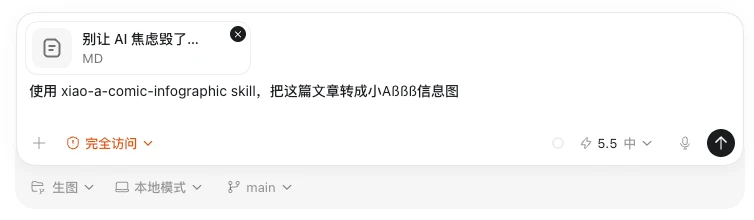
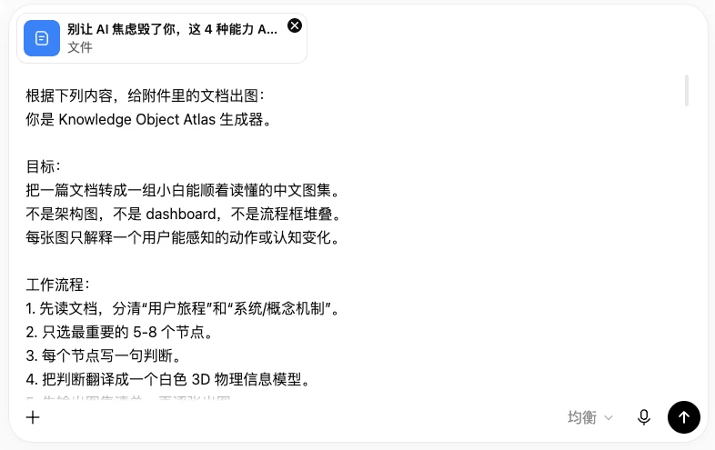

第一部分｜两类配图
01｜配图的分工
一篇文章可以有两类配图方式：一类让人记住你，一类让人看懂你。
带 IP 信息图。这里的 IP 是能反复出现、让读者认得出的固定角色。每张图里都有同一个角色，配出来的是海报和信息图。它适合需要形成个人辨识度的场合，读者刷到第三张图时，已经能认出你了。
无 IP 通用配图。全文是一组白色 3D 信息图，不绑定固定 IP 角色，画面围绕事情本身展开。可以用通用人物表现读者的动作，适合说明方法与流程。
02｜稳定出图三步
先立规则，再逐张出图，最后逐张自检，配图才有稳定产出。
- 先立规则。带 IP 用「角色闸门」锁死身份，无 IP 用「门禁清单」（一组出图前必须过的检查）。这些都是出图的硬性规则，规则写在前头，后面的图才不会一张一个样。
- 喂文章逐张出图。把文章交给生成器，一次出一张，每张对应一个信息点，不追求一次给全套。
- 逐张自检。每一张都拿规则对一遍，不合格的直接重出，不带着问题往下走。
这三步走顺，配图就从碰运气变成了可复用的产线。
第二部分｜带 IP 信息图
01｜IP 是内容资产
读者记住的不只是文章，还有那个反复出现的角色。
同样一篇文章，配上你的 IP，和别人的找张图凑数一比，立刻拉开差距。读者记住的除了这篇内容，还有一个可以反复出现的角色。下一次刷到同样的角色，他会自动想起上次看过的东西。
IP 一旦稳定，每张配图都在往同一个账户里存钱，越用越厚。
02｜操作示例
整套操作就一句话：把文章和提示词交给生成器。
把文章文件和小A 信息图生成器（xiao-a-comic-infographic）一起交给 AI，由它提炼信息点。确认信息准确后，再用 GPT Image 2 逐张生成中文配图；每张通过检查后继续，最后放回文章对应位置。

真机操作：带 IP 配图提示词
要换成自己的 IP，把角色闸门中的身份描述替换为自己的设定，并提供正面、侧面、背面三视图。文章和出图流程可以沿用。
03｜skill 功能说明
配图四步流程
文章交出去之后，四件事由生成器在内部依次完成。
- IP 调用。把角色身份、表情动作、信息图版式一起调进来。
- 文章压缩。把文章压成标题 + 3 到 5 个信息点 + 一个视觉结构 + IP 的站位和动作。
- 生成提示词并出图。把压缩结果写成提示词，逐张出图。
- 质检。三看：身份没漂（每张图里还是同一个角色）、文字够短、一眼读懂。
这四步由生成器完成，不需要逐条手动操作。真正要判断的只有一件事：文章压出来的信息点对不对。
锁死角色
用一份写死的身份描述，让 IP 在每一张图里都是同一个人。
角色闸门（IP_DNA）的作用是把 IP 的身份锁死，它是一段固定不变的身份描述，每次出图都原样带进提示词。
以小A 为例，这段描述写清这些细节：
白色圆角屏盒、深蓝竖胶囊眼、右下蓝蓝橙三按钮、底部蓝包边、短粗蓝腿。默认没有手臂，需要指向或者递交东西的时候才伸出来。
细节写到这个程度，生成器才不会每张图自由发挥。这份描述可以整体替换成你自己创建的 IP，结构和写法都不变。
选情绪和版式
表情动作决定角色怎么演，信息图结构决定内容怎么摆。
表情库和动作库。库里备了 15 个表情标签（例如 gentle-smile、puzzled-question），还有挥手、递便签、举高、后仰支撑四个动作参考。出图时按内容从里面挑，它们提供的是情绪和姿态上的参考，不必逐张照搬。
信息图结构。按内容挑版式，skill 备了五类：流程类用 3 到 5 步，对比类左右分区，清单类用编号卡片，概念类中心发散，观点总结类用大标题加三个证据点。角色小A作为可信赖的提示角色。
04｜成品展示
《AI 教不来的 4 种能力》的封面配图，同一套内容出了两个版本。
信息卡片版式：四个能力各占一张卡片，配 3D 图标，小A 站在卡片前面，信息密度高，适合内容本身有明确分类的封面。
编号标题版式：小A 站在画面正中，四个能力用编号和引导线分列四周，主角感更强，读者第一眼记住的是角色。
成品：带 IP 封面的两种版式
两版都能用，看这篇文章更需要分类清楚，还是更需要强化角色印象。
第三部分｜无 IP 通用配图
01｜图集要顺着读
一组图集要像一段旅程，从第一张读到第六张，读者的认识往前走了一步。
无 IP 的配图是一组白色 3D 信息图，一图一个动作，整篇共 5 到 8 个动作节点。它要解决的是文档读完抓不住重点的问题：文字讲上几段道理，图用六张就把整条路径摆出来。
判断标准很简单：把图打乱顺序以后，读者还能不能顺着读下去。能，这组图就立住了。
02｜操作示例
整套操作就一句话：把文章交给通用配图生成器。
把通用配图生成器（Knowledge Object Atlas）的提示词和文章文件一起交给 AI，先给出图集清单，再用 GPT Image 2 逐张生成中文配图。

真机操作：无 IP 图集提示词
换成自己的文章时，替换上传的文档即可。要换视觉风格，再修改提示词里的“风格骨架”，可以使用手绘、扁平、杂志或像素风。白色 3D 是默认风格，工作流、门禁与自检要求继续沿用。
03｜生成器功能说明
出图流程
文章交出去之后，生成器按五步走完。
- 先读文档。把「用户旅程」和「系统机制」分开，图集画的是前者。
- 只选 5 到 8 个节点。挑的时候盯着用户：一开始遇到什么、第一次看到什么、怎么做出选择、在哪里反馈或判断、什么时候拿到结果、下一次为什么更准。
- 每个节点写一句判断。这句话是留给读者的认知结论。
- 把判断翻译成物理信息模型。用一个白色 3D 物件或一组关系清晰的物件表达判断，不能用随机图标拼贴代替。
- 先输出图集清单，再逐张出图。清单定下来，图才一张一张往下走。
出图门禁
先把每张图的动作和判断写清楚，画出来才不会跑偏。
每张图先填 5 个字段：编号、用户动作、判断句、中心隐喻、是否可感知。字段填完，再拿四条门禁对一遍。
- 动作能按顺序读。六张图连起来能一路走完，避免画成一堆框堆在一起的架构图。
- 判断句是给人看的一句话。写读者能直接记住的话，避免写成参数或者功能描述。
- 隐喻能画成物理信息模型。这里的中心隐喻，就是用什么具体物件或场景表达意思；它要能具象成一个看得见的 3D 物件，画不出来的隐喻就换掉。
- 每张图只讲一个动作。一张图塞进两件事，读者就抓不住重点。
四条都过，才进入生图。
单张结构
每张图固定三层，读者不用找就知道先看哪里。
Top 顶部：编号、英文 slug（英文短名）、中文步骤名，中文不超过 6 个字。
Center 中部：一个白色 3D 信息模型，中心画面要一眼看懂动作，最多带 3 个短标签。
Bottom 底部：一句中文判断，不超过 12 个字。它给的是认知结论，不是对画面的描述。
图集：01 先别慌
三层固定以后，六张图摆在一起自然成一套。
中央模型
中心那一个物件怎么摆，决定了这张图能不能一眼看懂。
多物件不能随便堆，要让它们保持相近的结构、统一的方向，共同表达一个意思。常见的六种：
- 同类物件沿时间线生长，呈现逐步发生的变化
- 输入逐步变成输出，呈现处理前后的变化
- 层层堆叠，呈现逐层积累的关系
- 多个同质节点环绕核心，呈现它们与同一中心的关系
- 多个对象被筛成少数对象，呈现筛选与收敛的过程
- 一条路径从混乱走向清晰，呈现逐步理清的过程
出现语义分叉、随机图标拼贴，或者把系统内部机制画成主角，这张图就要重画。
04｜图集六张成品
六张图一气读完，文章的骨架就立住了。
《AI 教不来的 4 种能力》的图集，六张顺着读下来：
01 start-here 先别慌 / 先别被别人吓住
02 ask-better 问具体 / 问清楚才有好答案
03 verify 做判断 / 看着对不等于真
04 try-first 先动手 / 先试再谈方法
05 beginner 像新人 / 好奇心比经验更稳
06 carry-on 带着走 / 四种能力比工具更稳
图集：六张成品
六个节点连起来，正好是读者从焦虑到拿走的完整心理路径。
小结
- 带 IP 信息图：用小A 生成器，让读者记住你。
- 无 IP 图集：用通用配图生成器，让读者读懂文章。